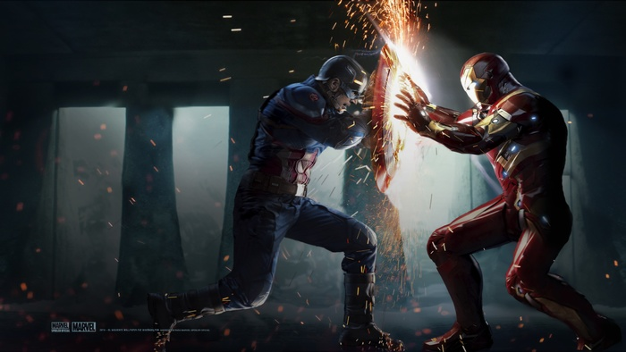
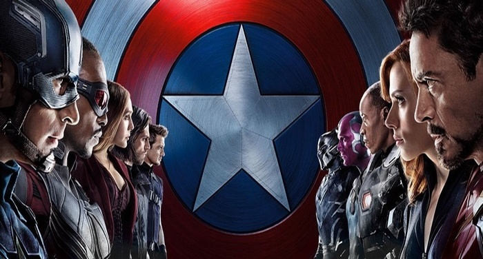

Sipnosis
Nacido durante la Gran Depresión (años 30), Steve Rogers creció como un chico enclenque en una familia pobre. Horrorizado por las noticias que llegaban de Europa sobre los nazis, decidió enrolarse en el ejército; sin embargo, debido a su precaria salud, fue rechazado una y otra vez. Enternecido por sus súplicas, el General Chester Phillips le ofreció la oportunidad de participar en un experimento especial: la "Operación Renacimiento". Tras administrarle el “Suero Super-Soldado” y bombardearlo con “vitarrayos”, el cuerpo de Steve se hace perfecto. A continuación, se sometió a un intensivo programa de entrenamiento físico y táctico. Tres meses después, le encomendaron su primera misión como Capitán América. Armado con un escudo indestructible, emprenderá la guerra contra el Mal como centinela de la libertad y líder de los Vengadores.

- 
- 